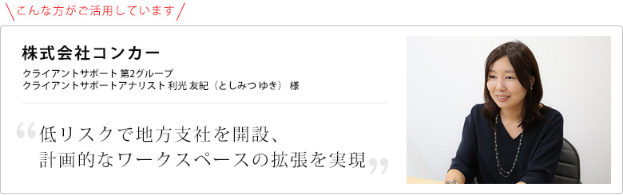
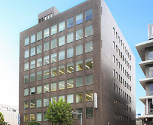

お客様の声
ご利用事例

企業紹介
全世界の6,600万人以上が利用、約16兆円の経費を処理、日本でも6年連続トップシェア*の出張・経費管理クラウドを提供しているコンカー。国内事業拡大に伴う大分支社開設でレンタルオフィスを活用した背景やメリットについてお伺いしました。
*出典：ITR「ITR Market View：予算・経費・就業管理市場2020」 国内経費精算市場：ベンダー別売上金額シェア（2014～2019年度予測）

ご利用いただいているセンター : オープンオフィス大分
オープンオフィス大分は、大分駅の北側、昭和通りに面した大分中央郵便局の隣接した大分恒和ビルの4階に位置します。センター向かいには大分市役所があり、大分県庁や大分地方裁判所、大分税務署などの官公庁施設も当エリア一帯に集中しています。また大分銀行本店や金融機関、新聞社メディアも周辺に拠点を構えており、大分経済の中心となるビジネスエリアです。
地方の支社立ち上げに、
拡張性が高く低リスクのレンタルオフィスを活用
御社の日本における事業展開について教えてください。
出張・経費管理クラウドを提供しているコンカーは、2010年に日本法人設立後、2013～2019年の7年間で売上250倍の成長率を記録しています。現状、日本の時価総額TOP100の企業のうち、46%の企業様にご利用いただいています。
今後の事業拡大方針としては、ビジネスシーンで活用される様々なサービスや、企業様との連携を通じて、経費精算での「ビジネスキャッシュレス構想」の実現を目指しています。
例えば、電車に乗る時、交通系ICカードで運賃を使った場合、自社に戻ってからシステムに入力をして精算をする必要がありますが、その作業をしなくても交通系ICカードで取引がされた瞬間に利用データがシステムに連携され、そのままスムーズに精算まで一貫して行えるような、経費精算の作業自体をする必要がなくなる世界を目指しています。
大分支社の立ち上げの経緯とレンタルオフィスを選んだ理由を教えてください。
弊社のシステムを導入後、お客様からの問合せに対応する部署の一拠点として大分支社を開設しました。現在はサポート部門に加えて、業務範囲やメンバーを拡大しています。
大分を選んだ理由としては、補助金制度が充実していたということと、会社幹部の一人が大分出身だったということがあります。
今後、人員拡大をしていくにあたり、拡張性を考えたときのニーズにマッチしていたことが、レンタルオフィスを選んだ理由です。大分での採用活動を進めていく中で、どの程度の速度で採用が進んでいくかが見えなかったということもあるので、レンタルオフィスからスタートするという形をとりました。
リージャスの高いサポート力で
スペース拡張もスムーズに対応
大分支店開設当初のご利用ワークスペースは10席でしたが、現在は倍の広さにまで拡張いただきました。
拡張を依頼してから対応までの流れは非常にスムーズでした。オフィス内の換気の問題があり、構造上の問題ですぐに解決できるものではなかったのですが、親身に話を聞いていただきました。リージャスのご担当者の方には何回もオフィスに足を運んでいただき、丁寧にサポートいただけました。
私も、ある日出社したら、それまであった壁が取り払われていて、あたかもその前からそうだったようにオフィスが拡張されていたのでびっくりしました。配線なども変更がありましたが、拡張後も特にトラブルは起きず、順調に利用できています。
働きやすいオフィス環境や立地、サポートも魅力
オフィス環境としてご利用状況はいかがでしょうか。
個人的な意見にはなりますが、商店街の近くに立地しているので色々な場所へのアクセスがよく、利便性が高いと感じています。
オフィスの環境としても静かですし、セキュリティ面でも、入口と私たちの執務スペースの２段階でオートロックが設置されているので、安心感があります。また、自動販売機が近くにある点もありがたいです。
なんといっても、何か困ったことがあったときに、こちらから連絡した際、すぐにサポートいただける体制が安心できるな、と感じています。
また、会社間のコミュニケーションの一環として、オフィス内の利用者同士の交流会が度々開催されています。オフィス内の他の利用者の方と顔見知りとなったことで、挨拶以外にも一言二言交わせるような間柄になりましたし、素敵な取り組みだなと思いました。
- 企業データ株式会社コンカー
- 設立：2010年10月
- 資本金：4.5億円
- 業種：出張・経費管理、請求書管理クラウドサービスの提供
- リージャスご利用歴：1年
- 利用サービス：オープンオフィス大分
- SAP Concur は全世界の6,600万人以上が利用、約16兆円の経費を処理、日本でも6年連続トップシェア*の出張・経費管理クラウドを提供しています。
www.concur.co.jp